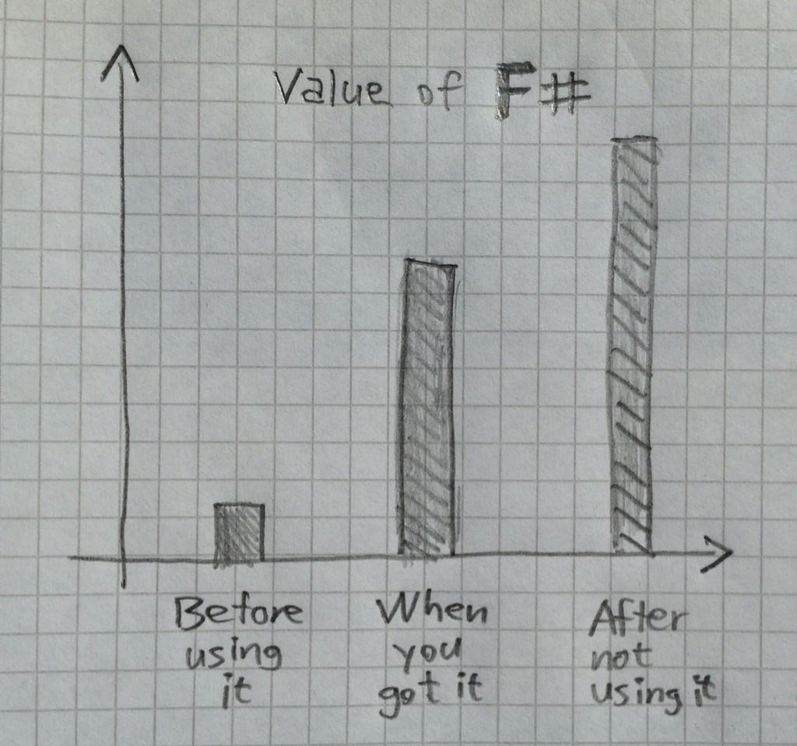

F# you've left me a broken man
There was a really great Tweet going around the F# community the other day that really resonated with me. The chart was simple but illustrative of the destitution a developer faces when they are forced to move on from F#.

A short while ago I was fortunate enough to work on a project for three months using F#. I enjoyed F#, after a while I started to get it. Unfortunately, about the time that F# and the hybrid functional programming style really started to sink in the engagement ended. All that being said I was really happy with what I produced.
More recently, I've been working at an engagement using VB.Net. Now, I prefer coding in C# to VB.Net, but given that I started out my development career using VB.Net the language doesn't bother as much as it does many developers. Regardless, VB.Net vs C# so isn't the point of this post.
I don't want people to get fixated on VB.Net so I'm just going to pretend for the rest of this post that I'm actually using C#.
What I'm finding irritating is that I want to use my F# patterns as I find them so much more descriptive than what you can do with C#.
It's the little things.
I under appreciated immutability. If you'll forgive the arrogance, I saw its main purpose in dealing with developers who didn't understand how to manage state across a concurrent system. (And a 'few' other legitimate cases around concurrent processing and event sourcing). But having immutable objects made my code far more deterministic and easier to follow. I produced less bugs and my tests instead of usually failing after being written almost always went green.
I just want to pipe everything. I went from finding piping this weird hippy construct to wanting to build up my logic production line. Piping makes the flow of logic really simple to follow.
Discriminated Unions are awesome. If this is a breakup then they are the puppy dog of the relationship. They are the one thing that I knew I was going to miss. Being able to lay out a simple series of choices along with correlated data made it so easy to have a descriptive composible programming structure.
The switch statement is not replacement for F#'s match. If you don't know what I'm talking about check-it'.
There are plenty of other things I miss like no nulls, parallelism, code quotations, type providers, and computational expressions but it gets pretty sad after a while seeing a grown man cry.
F# has changed the way I code with C#.
When coding up my first C# task since moving on from F# I just figured I'd go back to my roots. But I had to keep catching myself when doing that things I wouldn't have ordinarily done before. And you know what? It's actually improved my programming style.
I think a lot more about whether or not an object needs to be mutable. I'm continuing with my production line, but since C# doesn't support piping I'm having to rein it in a bit.
I picked up a task the other day that seemed fine to do in C# but I kept finding things like wanting to pull in data from different sources and map it all in parallel, and then finish it up aggregating the resulting mappings. You know, map / reduce! F# again is so well suited for that. And I keep finding examples of that in my work.
But all I really want to say is...
F# - I'm sorry, I miss you, please take me back.
Authors Note: I'm not saying F# all of the things as that wouldn't be objective. C# is still a very good programming language, and the F# tooling really needs to catch up.
Actually - fuck it, F# all of the things!!!